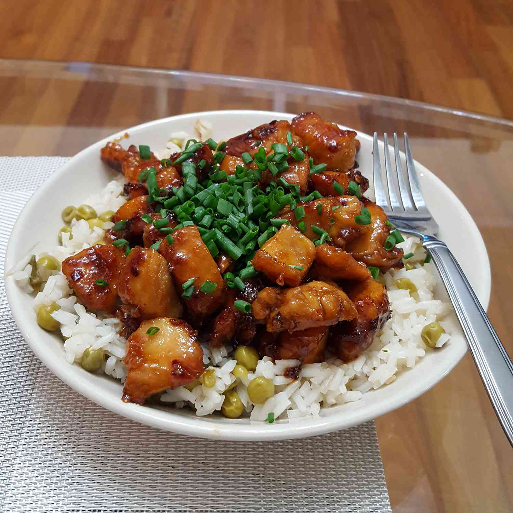

Honey Glazed Chicken

Description
Delicious honey chicken recipe that can be served with whit rice and vegetable
Ingredients
- 1/4 cup of honey
- 2 tablespoons of soy sauce
- 1 1/2 tablespoons of olive oil
- 2 skinless, boneless chicken breast
Steps
- Whisk honey, soy sauce, and red pepper flakes in a bowl; set aside.
- Heat olive oil in a skillet over medium heat; cook and stir chicken in hot oil until lightly brown, about 5 minutes.
- Pour honey mixture into the skillet; continue to cook and stir until chicken is no longer pink in the center and sauce is thickened, about 5 minutes more.